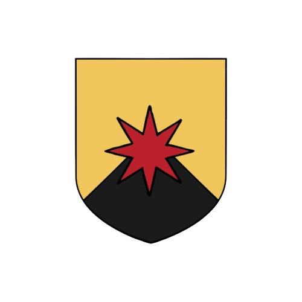
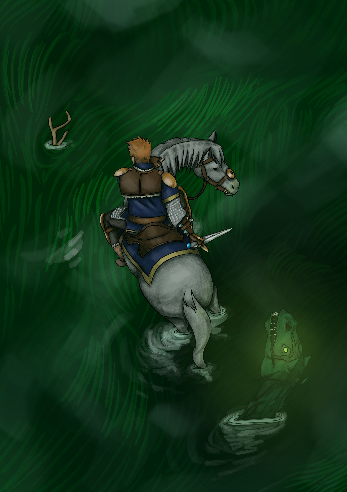

The Crown of Jasper is a heroic fantasy novel that immerses the reader in an ancient world where magic, gods, and mysteries intertwine with power struggles. The story follows characters with intertwined destinies, each seeking to carve out a place for themselves in this world... or at least survive.

A young warrior of the Order of Jasper, ranked as an apprentice, her destiny changes the day the convoy she is protecting is attacked. From a respected fighter, she falls into disgrace and infamy.
An assassin from the Toss Empire, where he is actively sought after, he is short, stocky, with a red beard. Gifted with short-term visions, his prophetic abilities lead him across the Jorovian Empire alongside his best friend, Férass.
Kaell, a feared general of the Freanian fleet, poses a threat to the Tossian coast. Her drakkars, filled with warriors that are half-human, half-dragon, relentlessly raid the lands. But what is the true purpose of this campaign of terror?

L’éclat de lumière la déstabilisa suffisamment pour que l’inconnu, après avoir utilisé la clarté de sa lame pour l’éblouir, lui assène une entaille superficielle sur les côtes. Eloween trébucha dans le sable noir sous l’effet de la douleur. Le poids de son manteau gorgé d’eau l’attira en arrière. Le froid de l’eau sur son visage lui coupa le souffle et le sel lui piqua les yeux. Elle était tombée dans les vagues et ne distinguait plus son adversaire. Le soleil qui déclinait sur la mer et qui l’avait handicapé plus tôt, fut caché par une ombre au-dessus d’elle. Eloween comprit que l’inconnu avait pivoté sur la gauche. Elle roula donc sur la droite dans un tourbillon de sable noir, de bulles d’air et d’eau de mer.